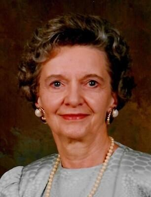

Addison Ehrlinger
(November 1, 1925 – November 6, 2020)
Relationship to St. Andrew United Methodist Church – Addison attended St. Andrew with her nephew, John G. Adams.
Family: She was born to the late John and Marcella Burns in Belfast, North Ireland. In 1956 she married Howard Ehrlinger and he preceded her in death in 2000. She is survived by nephew, John G Adams (West Lafayette), niece Margaret (Fullerton, CA) and nephew William Lafayette (New Albany.)
Recognitions, Activities, Special Interests: Addison loved to travel and made many “cruise buddies” and life long friends on cruises all over the world. While living in Westminister Villages she earned the Hospitality of the Year Award for her volunteering. She also enjoyed crocheting. Earlier in her life she worked as an Insurance Adjustor for Commercial Union Insurance.
Use of Memorial Funds: Gifts will be added to the sanctuary improvement funds.
Obituary:
Addison Ehrlinger
West Lafayette - Addison Clarence Johnston Burns Ehrlinger, 95, of West
Lafayette, passed away on Friday, November 6, 2020 at West Minster Village.
She was born November 1, 1925, in Belfast, North Ireland to the late John and
Marcella (Moat) Burns. She graduated from Hyde Park High School in Chicago. In
June 1956, she married Howard Ehrlinger. Howard preceded her in death on
December 24, 2000. Addison worked as a Insurance Adjustor for Commercial Union
Insurance and attended St. Andrew's United Methodist Church in West Lafayette.
Addison loved to travel and go on cruises. She made many "cruise
buddies" and life long friends on cruises all over the world, including
Hawaii and South America. She also enjoyed crocheting and volunteering at
Westminster Village. Her volunteer work at Westminster earned her the
Hospitality of the Year Award.
Surviving are her nephew, John G. Adams of West Lafayette; niece, Margaret
Montague of Fullerton, CA; nephew, William Lafayette of New Albany; and several
great nieces and nephews.
Along with her husband and her parents, Addison was preceded in death by her
sisters, Marjorie Lafayette and Joan Adams.
Visitation will be from 11:00 am until time of service at 11:30 am, Wednesday,
November 11, 2020 at Soller-Baker West Lafayette Chapel, 1184 Sagamore Parkway
West, West Lafayette with Rev. Chris Danielson officiating.
The family requests flowers not be sent and that memorial contributions in
Addison's name be given to St. Andrew's United Methodist Church 4703 N. 50
West, West Lafayette, IN 47906 or Westminster Village Foundation, 2741 N.
Salisbury St., West Lafayette, IN 47906, or to Joyful Journey, 600 Lindberg Rd,
West Lafayette, IN 47906.
You may leave condolences, share memories, and sign the guest book at
www. soller-baker.com.